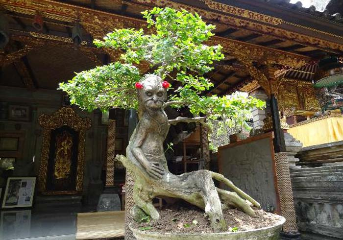

Lempad House
Saat wisatawan berencana liburan di Bali, ada 2 tempat wisata yang menjadi prioritas dari sebagian besar wisatawan untuk di kunjungi. Kedua objek wisata tersebut adalah tempat wisata Kuta dan tempat wisata Ubud. Kedua tempat wisata favorit wisatawan ini, menawarkan dua hal yang berbeda. Kalau Kuta lebih dominan akan wisata pantai dan kehidupan malam, sedangkan objek wisata di Ubud menawarkan wisata alam, wisata seni dan budaya.
Salah satu objek wisata di Ubud terkenal dengan nama Lempad House. Tentunya tempat wisata Lempad House akan sangat cocok dikunjungi, jika wisatawan menyukai seni pahat dan seni lukis khas Bali. Pemilik dari Lempad House mendapat sorotan luar biasa dari dunia international, akan hasil karya seninya dan kisah hidupnya.
I Gusti Nyoman Lempad
Pemilik dari Lempad House Ubud adalah seorang arsitek, seniman pahat dan seniman lukis yang di perkirakan umurnya 116 tahun. Seniman ini bernama I Gusti Nyoman Lempad. I Gusti Nyoman Lempad lahir diperkirakan sekitar tahun 1862 dan beliau meninggal dunia pada tahun 1978. I Gusti Nyoman Lempad meninggal dengan cara yang tidak biasa, karena mampu memilih waktu kematiannya secara sadar. Mungkin ini terdengar seperti di buat-buat tetapi hal ini adalah kisah nyata yang di liput oleh media International.
Satu bulan sebelum hari kematiannya, I Gusti Nyoman Lempad memanggil seluruh keluarganya dan meminta untuk memandikan dan mendandani, selain itu mengatakan kepada sanak keluarganya akan warisan mereka. Hari kematian yang dipilih oleh I Gusti Nyoman Lempad adalah hari suci bagi umat Hindu Bali. Liputan sesaat sebelum kematiannya dan saat upacara kematianya di liput oleh Lawrence Blair untuk acara televisi Ring of Fire: An Indonesian Odyssey.
I Gusti Nyoman Lempad, salah satu seniman terbaik yang Bali pernah miliki, ahli dalam seni lukis dan seni pahatan batu khususnya bagunan pura yang banyak terdapat di Ubud. I Gusti Nyoman Lempad buta huruf, tetapi memiliki ide-ide cemerlang dalam menghasilkan karya-karyanya. Banyak hasil karya lukisnya diberikan kepada orang secara percuma.

Rumah Seniman
I Gusti Nyoman Lempad
Saat anda liburan, sempatkanlah untuk mengunjungi rumah dari I Gusti Nyoman Lempad. Rumah ini masih bernuansa rumah asli Bali, yang terdapat kebun di dalamnya. Wisatawan juga dapat melihat beberapa Bonsai yang sangat tertata rapi. Tentunya juga dapat melihat beberapa hasil karya lukis dari I Gusti Nyoman Lempad dan penghargaan yang pernah diterimanya.
Lokasi Lempad house berada di Jalan dewi Sita Ubud.. Beberapa hasil karya lukisan I Gusti Nyoman Lempad, dapat dilihat di museum Neka Ubud dan museum puri Lukisan Ubud. Untuk melihat beberapa koleksi lukisan dari I Gusti Nyoman Lempad di rumahnya dapat dilihat koleksi lukisan Lempad House.
Tentunya saat ingin mengunjungi Lempad House, pasti akan memerlukan kendaraan. Ada beberapa cara terbaik untuk mengunjungi Lempad House. Jika ingin menginap di Ubud, menggunakan taksi salah satu cara terbaik, selain murah dan sangat mudah di cari di kawasan wisata Ubud. Jika tidak menginap di Ubud, tentunya menggunakan taksi membuat biaya akan lebih mahal. Oleh karena itu, disarankan untuk mengunakan jasa sewa mobil di Bali dengan supir. Dengan menggunakan jasa sewa mobil di Bali dengan supir, wisatawan tidak perlu memikirkan akan tempat parkir yang sangat susah di cari di kawasan wisata Ubud.
Selain menggunakan jasa sewa mobil Bali dengan supir, dapat juga mencari paket wisata di Bali yang menawarkan paket wisata ke Ubud. Walaupun tidak banyak penyedia jasa paket tour murah di Bali yang memasukan rute tour untuk mengunjungi Lempad House, tentunya dapat meminta penyedia jasa paket tour di Bali untuk membuat jadwal berkunjung ke Lempad House selama wisata di Bali.